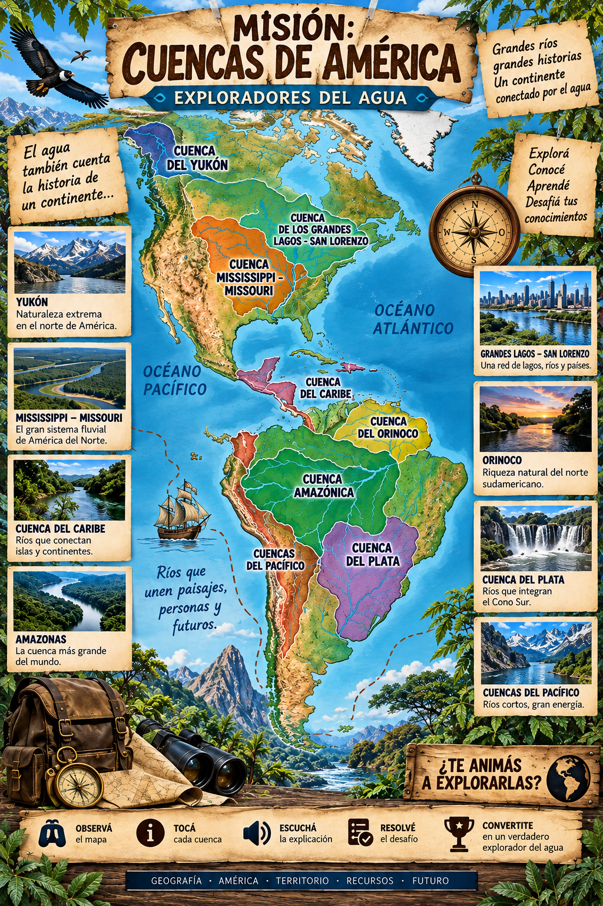

🌎 MISIÓN: CUENCAS DE AMÉRICA
💧
💧
💧
💧
💧
0/5

Tocá una de las cinco cuencas principales del mapa para comenzar la expedición.
🧭 Cómo jugar
🏆 Desafío final
ESTACIÓN DEL EXPLORADOR
×
🔊 Escuchar explicación
💧 Registrar esta cuenca
MISIÓN FINAL
🏆 Salvar las aguas de América
×